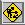

About me
 orcid.org/0000-0003-3130-9505
orcid.org/0000-0003-3130-9505On this site
Elsewhere
Welcome to my new homepage on GitHub.  This page is under construction (and probably always will be!)
I am an Emeritus Professor in the School of Mathematics and Statistics at the University of St Andrews, and an Emeritus Professor of Mathematics at Queen Mary, University of London. In addition, I am an associate researcher at CEMAT, University of Lisbon, Portugal.
I am a Fellow of the Royal Society of Edinburgh.
About me
On this site
|
Elsewhere
|
Let M be a set carrying a partial order, and (G(m)) be a family of transitive permutation groups indexed by M. The generalised wreath product of the family over the poset is a construction of a permutation group on the cartesian product of the domains; it is too complicated to define here, but note that the g.w.p. over a 2-element antichain is the direct product, while the g.w.p. over a 2-element chain is the wreath product.
In a joint paper with Marina Anagnostopoulou-Merkouri and Rosemary Bailey, we prove a number of results. Two of them are:
Old research snapshots are kept here.
| I am Honorary Editor-In-Chief of the Australasian Journal of Combinatorics, an international open-access journal published by the Combinatorial Mathematics Society of Australasia. |
|
School of Mathematics and Statistics
University of St Andrews North Haugh St Andrews, Fife KY16 9SS SCOTLAND |
Fax: +44 (0)1334 46 3748 Email: pjc20(at)st-arthurs(dot)ac(dot)uk [oops – wrong saint!] |
Page revised 1 March 2025 |
Richard Parker, who died recently, made a beautiful observation about finite permutation groups. He showed that the number Pk of orbits of a permutation group G on the set of k-cycles of elements of the symmetric group which actually occur in elements of G is the average, over G, of the number of points lying in k-cycles of an element of G. As a consequence, this result generalises the Orbit-Counting Lemma, and also shows that the sum over k of the numbers Pk is equal to the degree of the permutation group. The tuple (P1,…,Pn) is called the Parker vector of G.
Julian Gilbey showed me some time ago that the Parker vectors of the two wreath products G wr H and H wr G are equal. This led me to wonder briefly whether the Parker vector of a generalised wreath product depends only on the factors and not on the partially ordered set used to glue them together. But this is false in general. The Parker vector of C2 wr C2 is (1,2,0,1), whereas the Parker vector of C2 × C2 is (1,3,0,0).
Problem: Is it true that, if the factors of a generalized wreath product have pairwise coprime orders, then the Parker vector is independent of the poset used in the construction but depends only on the factors?
Old poblems are kept here.